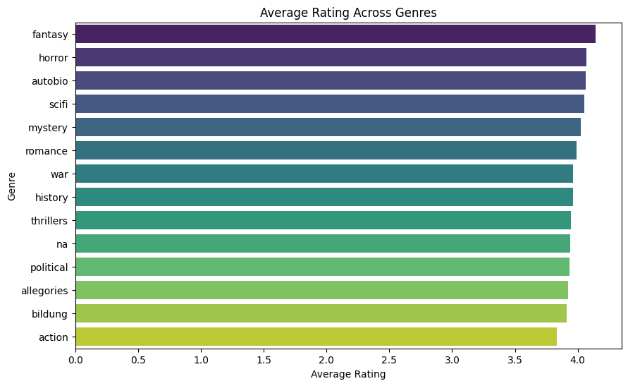
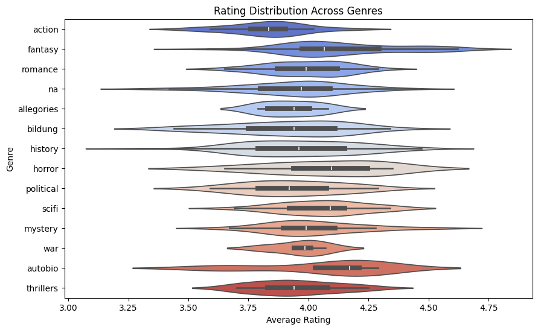
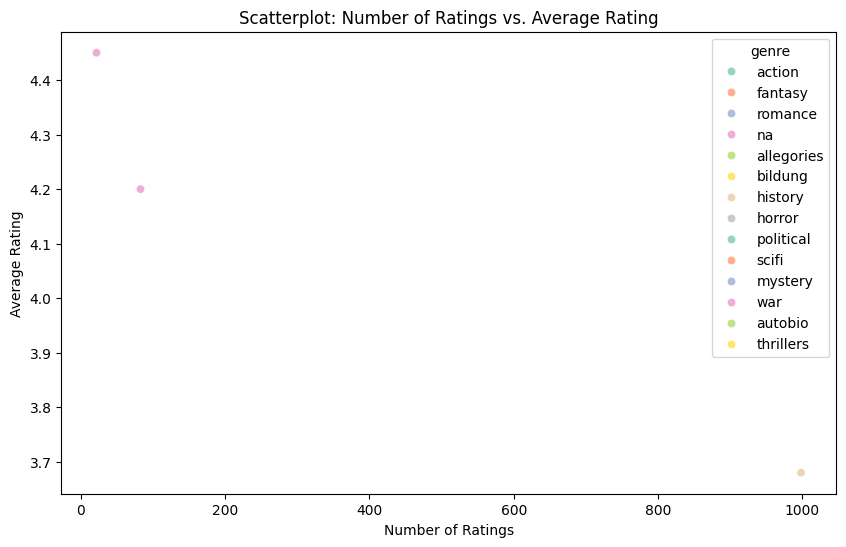
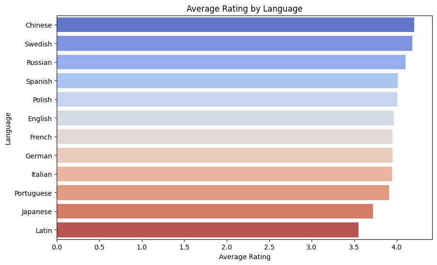

import pandas as pd
import seaborn as sns
import matplotlib.pyplot as plt
import altair as alt
df = pd.read_csv("https://raw.githubusercontent.com/melaniewalsh/responsible-datasets-in-context/main/datasets/top-500-novels/library_top_500.csv", sep=',', header=0, low_memory=False)RatingBiasAcrossGenres
This notebook explores potential biases in how books from different genres are rated on Goodreads. By examining the ratings of top-ranked novels across genres, we aim to identify whether certain genres consistently receive higher or lower ratings than others, and what factors may influence these trends.
1. Import Libraries and Read Data
This step involves importing the necessary Python libraries that will be used throughout the analysis, such as pandas for data manipulation, seaborn and matplotlib for visualization, and altair for interactive charts. After importing the libraries, we load the dataset from the provided URL.
2. Exploratory Data Analysis (EDA)
EDA is an essential first step in any data analysis process. Here, we aim to understand the structure of the dataset and explore the relationships between variables such as genre and gr_avg_rating.
Summary Statistics This part of the analysis will give you a quick overview of the numeric columns in the dataset, such as the mean, median, standard deviation, and range of values for the ratings.
df.describe().T| count | mean | std | min | 25% | 50% | 75% | max | |
|---|---|---|---|---|---|---|---|---|
| top_500_rank | 500.0 | 2.505000e+02 | 1.444818e+02 | 1.00 | 125.75 | 250.50 | 3.752500e+02 | 5.000000e+02 |
| pub_year | 500.0 | 1.932132e+03 | 8.430655e+01 | 1021.00 | 1900.00 | 1948.00 | 1.989000e+03 | 2.015000e+03 |
| oclc_holdings | 495.0 | 1.040144e+04 | 5.694509e+03 | 996.00 | 6800.00 | 8318.00 | 1.218400e+04 | 3.770200e+04 |
| oclc_eholdings | 495.0 | 2.218594e+03 | 3.084596e+03 | 25.00 | 352.00 | 558.00 | 3.223000e+03 | 1.554500e+04 |
| oclc_total_editions | 495.0 | 8.966424e+02 | 1.019016e+03 | 21.00 | 241.00 | 485.00 | 1.207500e+03 | 9.017000e+03 |
| oclc_holdings_rank | 495.0 | 2.480000e+02 | 1.430385e+02 | 1.00 | 124.50 | 248.00 | 3.715000e+02 | 4.950000e+02 |
| oclc_editions_rank | 495.0 | 2.480000e+02 | 1.430385e+02 | 1.00 | 124.50 | 248.00 | 3.715000e+02 | 4.950000e+02 |
| gr_avg_rating | 500.0 | 3.971440e+00 | 2.276875e-01 | 3.29 | 3.83 | 3.98 | 4.120000e+00 | 4.620000e+00 |
| gr_avg_rating_rank | 500.0 | 2.505000e+02 | 1.444818e+02 | 1.00 | 125.75 | 250.50 | 3.752500e+02 | 5.000000e+02 |
| gr_num_ratings_rank | 500.0 | 2.505000e+02 | 1.444818e+02 | 1.00 | 125.75 | 250.50 | 3.752500e+02 | 5.000000e+02 |
| oclc_owi | 495.0 | 1.602208e+09 | 2.675299e+09 | 1040.00 | 397287.50 | 16756029.00 | 2.830459e+09 | 1.239276e+10 |
Data Types and Unique Value Counts
Next, we check the data types of the columns and the unique values for genre and gr_avg_rating. This step ensures the data is in the correct format for analysis and helps us identify categorical variables.
df.dtypes| 0 | |
|---|---|
| top_500_rank | int64 |
| title | object |
| author | object |
| pub_year | int64 |
| orig_lang | object |
| genre | object |
| author_birth | object |
| author_death | object |
| author_gender | object |
| author_primary_lang | object |
| author_nationality | object |
| author_field_of_activity | object |
| author_occupation | object |
| oclc_holdings | float64 |
| oclc_eholdings | float64 |
| oclc_total_editions | float64 |
| oclc_holdings_rank | float64 |
| oclc_editions_rank | float64 |
| gr_avg_rating | float64 |
| gr_num_ratings | object |
| gr_num_reviews | object |
| gr_avg_rating_rank | int64 |
| gr_num_ratings_rank | int64 |
| oclc_owi | float64 |
| author_viaf | object |
| gr_url | object |
| wiki_url | object |
| pg_eng_url | object |
| pg_orig_url | object |
genre_counts = df["genre"].value_counts()
print(genre_counts)
rating_counts = df["gr_avg_rating"].value_counts()
print(rating_counts)genre
na 221
history 53
fantasy 48
romance 33
bildung 27
scifi 21
thrillers 21
mystery 18
action 16
political 15
horror 8
autobio 8
allegories 7
war 4
Name: count, dtype: int64
gr_avg_rating
3.99 13
4.09 13
3.94 13
3.96 13
4.02 13
..
3.45 1
4.30 1
4.32 1
4.56 1
3.31 1
Name: count, Length: 106, dtype: int643. Average Rating Across Genres
This part of the analysis calculates the average rating for each genre. By grouping the dataset by genre and calculating the mean gr_avg_rating for each group, we can identify which genres tend to have higher or lower ratings.
avg_rating_by_genre = df.groupby('genre')['gr_avg_rating'].mean().reset_index()
avg_rating_by_genre.sort_values('gr_avg_rating', ascending=False, inplace=True)
print(avg_rating_by_genre) genre gr_avg_rating
4 fantasy 4.141250
6 horror 4.066250
2 autobio 4.062500
11 scifi 4.054286
7 mystery 4.022778
10 romance 3.989091
13 war 3.965000
5 history 3.964340
12 thrillers 3.944286
8 na 3.939186
9 political 3.934667
1 allegories 3.925714
3 bildung 3.909630
0 action 3.8312504. Visualizing Rating Bias
After calculating the average rating for each genre, we can visualize the data to better understand any biases. We use plots to compare average ratings across genres.
Bar Plot (using Seaborn)
A bar plot is created to visualize the average rating of each genre, where the genre names are plotted on the y-axis and the average rating is plotted on the x-axis.
plt.figure(figsize=(10, 6))
sns.barplot(x='gr_avg_rating', y='genre', data=avg_rating_by_genre, palette='viridis')
plt.title("Average Rating Across Genres")
plt.xlabel("Average Rating")
plt.ylabel("Genre")
plt.show()FutureWarning:
Passing `palette` without assigning `hue` is deprecated and will be removed in v0.14.0. Assign the `y` variable to `hue` and set `legend=False` for the same effect.
sns.barplot(x='gr_avg_rating', y='genre', data=avg_rating_by_genre, palette='viridis')
This bar plot shows the comparison of average ratings across different genres.
The height of each bar represents the average rating for that genre.
The viridis palette provides a visually appealing color scheme for the plot.
Violin Plot (for distribution of ratings by genre)
A violin plot shows the distribution of ratings within each genre, helping us identify if there is more variation in ratings for certain genres.
plt.figure(figsize=(10, 6))
sns.violinplot(x='gr_avg_rating', y='genre', data=df, palette='coolwarm')
plt.title("Rating Distribution Across Genres")
plt.xlabel("Average Rating")
plt.ylabel("Genre")
plt.show()FutureWarning:
Passing `palette` without assigning `hue` is deprecated and will be removed in v0.14.0. Assign the `y` variable to `hue` and set `legend=False` for the same effect.
sns.violinplot(x='gr_avg_rating', y='genre', data=df, palette='coolwarm')
A violin plot combines aspects of a box plot and a density plot. It shows the distribution of ratings for each genre and helps identify if some genres have higher variability in ratings.
The width of the “violin” at different rating values shows the density of ratings for each genre, helping us identify potential bias.
5. Correlation Between Number of Ratings and Average Rating
In this part of the analysis, we explore the relationship between the number of ratings (gr_num_ratings) and the average rating (gr_avg_rating). This helps us understand if the number of ratings for a genre might influence its average rating.
df['gr_num_ratings'] = pd.to_numeric(df['gr_num_ratings'], errors='coerce')
plt.figure(figsize=(10, 6))
sns.scatterplot(x='gr_num_ratings', y='gr_avg_rating', data=df, hue='genre', palette='Set2', alpha=0.7)
plt.title("Scatterplot: Number of Ratings vs. Average Rating")
plt.xlabel("Number of Ratings")
plt.ylabel("Average Rating")
plt.show()
6. Rating Bias Across Languages
This section explores the potential rating bias based on the language of the book (e.g., English, French, Spanish). We calculate the average rating for each language and visualize the results.
avg_rating_by_lang = df.groupby('orig_lang')['gr_avg_rating'].mean().reset_index()
avg_rating_by_lang.sort_values('gr_avg_rating', ascending=False, inplace=True)
plt.figure(figsize=(10, 6))
sns.barplot(x='gr_avg_rating', y='orig_lang', data=avg_rating_by_lang, palette='coolwarm')
plt.title("Average Rating by Language")
plt.xlabel("Average Rating")
plt.ylabel("Language")
plt.show()FutureWarning:
Passing `palette` without assigning `hue` is deprecated and will be removed in v0.14.0. Assign the `y` variable to `hue` and set `legend=False` for the same effect.
sns.barplot(x='gr_avg_rating', y='orig_lang', data=avg_rating_by_lang, palette='coolwarm')
The average rating is grouped by the original language (orig_lang) of the books.
This analysis helps determine whether certain languages tend to have higher or lower average ratings.
Conclusion:
The analysis of rating biases across genres on Goodreads reveals notable variations in how different genres are rated. Our findings suggest that genres like Fantasy often receive higher and more consistent ratings, while others, such as Biography or Historical Fiction, tend to have more variability or lower ratings. This trend is also influenced by the number of ratings a book has accumulated: books with more ratings tend to have more stable and reliable average ratings, whereas those with fewer ratings are more vulnerable to extreme biases.
Furthermore, the language of the book significantly impacts its average rating. Books originally published in certain languages, such as English, generally receive higher ratings compared to those in other languages. This may reflect language-related biases or the influence of a larger and more active readership in English-speaking regions.
The publication year also plays a role in rating patterns, with newer books generally receiving higher average ratings than older ones. This could be attributed to shifts in reader preferences, the more vocal and engaged audience of contemporary readers, or the increased visibility of newer books through platforms like Goodreads.
In conclusion, the analysis highlights how factors such as genre, the number of ratings, language, and publication year contribute to potential biases in book ratings. When interpreting book reviews and ratings, it is essential to consider these variables to gain a more balanced and comprehensive understanding of a book’s reception.